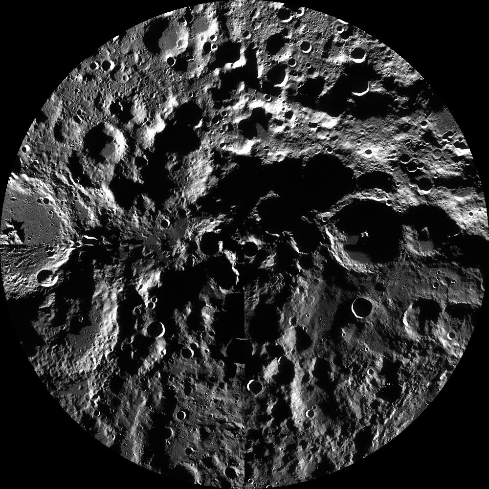

NASA Space Apps Challenge 2026 · Space Mission Design Game
Farpoint HORIZON
Build your own craft, launch it from the equator, fly it to the Moon, and keep it talking to Earth.
Team SK Horizon · Quito, Ecuador · Local event Sangolquí (ESPE)
Alexander Kholodov · Sebastián Amaguaya
The problem
Mission design is taught as a list, not lived as a story
A real mission trades mass, power, data, delta-v, budget and time against each other; on a whiteboard those trade-offs stay invisible.
Students meet orbits as formulas, never as a craft they built, launched and kept alive.
Ecuador put its first satellite in orbit in 2013 (NEE-01 Pegaso, a 1U CubeSat [S-pegaso]); the next generation needs a way in.
No design is perfect. The challenge asks players to feel that.
Sangay, Ecuador, seen by Landsat 8 (2022). Every image like this is the end of a chain of hard trade-offs. NASA Earth Observatory / USGS [S-eo]
The solution · how it plays
One complete mission, from the idea to the first signal home
Choose a mission→Design the craft (CML 1-4)→Build the rocket→Launch→Fly to the target→Operate with ground control→Celebrate
Every choice moves the shared gauges and shows on the craft itself. Missing a goal is never a failure screen: every mission that flies achieves something, and doing more earns bonuses. Four stations for up to four players (engineer, scientist, pilot, ground control), with bots in the free ones.
SCREENSHOTthe craft's design, a tile chosen and the gauges moving (scripts/screens/design.gd)
1 · Design: ten questions, real parts
SCREENSHOTthe rocket builder with a stack and its delta-v per stage (scripts/screens/builder.gd)
2 · Build the rocket
SCREENSHOTliftoff from the pad near Cotopaxi, time speed shown
3 · Launch from the equator
SCREENSHOTlunar orbit or touchdown, the celebration
4 · Arrive, operate, celebrate
NASA data at the core
Real NASA data drives the physics
JPL Horizons: where the Moon is on launch day; the trip is timed to meet it [S-horizons].
NSSDC Fact Sheets: mass, radius and gravity of every body [S-nssdc-planets].
GIBS, Landsat, ASTER, LRO, SRTM: the Earth, Ecuador's volcanoes and the Moon [S-gibs] [S-eo].
NASA APIs→tools/data/→data/nasa/*.json→physics and textures
Checked, not tuned
Our Electron-type rocket lifts 313 kg to low orbit (real: 300 kg); Cotopaxi's summit comes out at 5,876 m (published: 5,897 m).

The Moon's south pole from the LRO Wide Angle Camera mosaic, re-projected by our script [S-lroc-wac]
Technology · the working game
Built to run anywhere a school has a browser
Godot 4.7, GL Compatibility renderer: runs on integrated GPUs and in the browser; desktop build as a fallback.
Data apart from code: missions, parts, launchers and texts live in data/*.json, each value with its source.
Real behavior: gravity of every body, real constants; time runs real by default and the player speeds it visibly (×1, ×10, ×100).
Checked on every push: import, a headless run, a fuzz test and the web export; each change gets its own preview page.
Play it
TODO: live game link · repository: github.com/alexanderkholodov1/farpoint-horizon (MIT)
SCREENSHOTthe menu or mission cards in the web build, browser frame visible
Plays in the browser: TODO add the live link
Impact · next steps
From Ecuador's volcanoes to the Moon, in Spanish and English
For students, teachers and anyone curious: no install, every concept explained in plain words.
Local: launch from the equator (the Earth's spin is a free boost), watch Cotopaxi and Sangay, follow El Niño.
Missions: TODO confirm the list that ships (volcanoes, El Niño, the Moon, a space telescope).
After the hackathon
A story campaign; play with up to three friends online.
Classroom pilots in Ecuador. TODO: a partner or first step.
Cotopaxi from Landsat 8 (2015): the "Ecuador Volcano Watch" mission flies over it [S-eo]
Transparency · credits · team
Our work, our sources, our help
Made by us: the game, its 3D models (from our scripts), music and sounds. No AI-generated images.
Cited: TODO count of docs/sources.md (69 today), in the repository and the game's credits. No NASA logos.
AI disclosed: Claude Code for code and research; Cursor for a web test. TODO: the teammate's tools (README). The idea and design are ours.
Team SK Horizon
Alexander Kholodov: lead; the mission and the flight to the Moon.
Sebastián Amaguaya: the rocket builder, 3D models, look and sound.
SCREENSHOTthe credits film over the Earth, or the sources list in the game (scripts/screens/credits.gd)